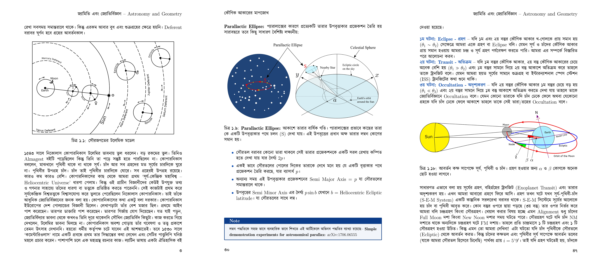
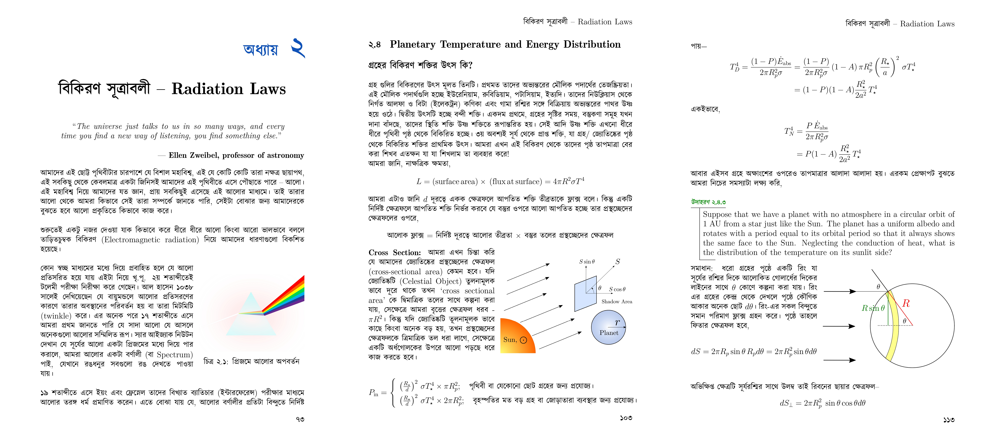

I am an early career researcher. My research interests include Exoplanetary Atmosphere, Strong Gravitational Lensing, Dark Matter distribution, and Variable Stars ✨.
I started my research journey during the summer of 2020. Since then I've worked on several research projects as well as some Academic projects. Currently, I'm working on writing my first research paper, my undergraduate thesis paper as well as A Textbook on Astronomy. You can read all about my current endeavors below.
I've written a detailed blog on Astronomy journal reading recommendations and how to read the journals (in Bengali). The blog also contains a list of Bangladeshi Astronomers. Any recommendations for improving the article is welcome. You can read the blog here

I am currently involved in a Research program supervised by Dr. Anowar Shajib, a NASA Einstein fellow from the University of Chicago. Under his supervision, we're working on Strong Gravitational Lens modeling. Through lens modeling, we will quantify how the mass is distributed in the lens galaxy and compare it with the light distribution to investigate the alignment between dark matter and baryonic matter in massive elliptical galaxies. The modeling will be performed with the software package lenstronomy, written in Python. I am privileged to be recognized as the first author of the paper that will be submitted for Publication .
From this research I learned the mathematical modeling of stellar systems and got highly involved in Gravitational lenses and Dark matter distribution. I'll soon update this page about the codes used for the program as well as a few notes that I've written to understand the mathematical concepts regarding this research.
TiO and VO in Atmosphere of exoplanet WASP 76-b
In the summer of 2020, I had an opportunity to attend my first Astronomy research internship at Leiden University (The Leiden/ESA Astrophysics Program for Summer Students, LEAPS) with Dr. Aurora Kesseli and Dr. Alex Cridland acting as my supervisors on the evolution of the exoplanetary Atmospheres. I have been offered the J. Mayo Scholarship at Leiden Observatory. We looked into the hot Jupiter WASP-76b using High Resolution Spectroscopy (HRS) with the data observed by CARMENES. The method used is transmission spectroscopy. Transmission spectroscopy of exoplanetary atmospheres routinely reveals light chemical species, such as H2O, Na, and K. Heavier molecules, such as Titanium Oxide (TiO) and Vanadium Oxide, have long been predicted to be present in the hottest exoplanetary atmospheres, but definitive detections of these species have been proven to be elusive. It has been predicted that metal oxides such as TiO and Vanadium Oxide occur in the observable regions of the hottest exoplanetary atmospheres causing thermal inversions on the dayside.
Our objective was to compare our observation with the already found signatures of TiO in Low-Resolution Spectroscopy (LRS). Previously, some studies found that there is in fact sign of TiO which was detected using LRS but it was noticed that when we do multi-resolution examination the results sometimes become conflicted and vague. So in our project, we decided to use HRS to confirm the existence of TiO and some other species. Multi-resolution spectroscopic observations are highly valuable in characterizing exoplanetary atmospheres and, hence, in understanding their formation history and evolution.
During our study, we used a cross-correlation method to retrieve any signature of TiO with our predicted model at a certain temperature. Our study at this point found that there are some signs of TiO also H2O but to explain something more vividly we’re cross-checking with different cross-correlation templates and a Python package called SYSREM.
I've written a blog on the basics of Transmission spectroscopy and Exoplanetary atmosphere detection which can be found below. I've also presented my research in the first-ever Bangladeshi Astronomy Journal Club.
জ্যোতির্বিজ্ঞানের যত কিছু -- First Bengali Astronomy Textbook
Along with my friend Md. Mahmudunnobe, I have dedicated the past four years to the creation of an Astronomy Textbook in Bengali. This textbook primarily targets students preparing for Astronomy Olympiads, but it also extends its reach to early undergraduate students with a passion for Astronomy. The book has been meticulously crafted to provide a highly personalized learning experience, covering topics that are not only relevant to modern Astronomy but also incorporating the latest data sets and references in the field.
The book is written in $\LaTex$ and is currently divided into seven chapters, and we are planning to release it in two volumes. The current draft of the book spans 400 pages, and I have personally curated all the diagrams featured within it. I am hoping I will be able to finish the book within 2024! Below, I am pleased to provide you with some sample articles and a preview showcasing the diagrams included in the book:

